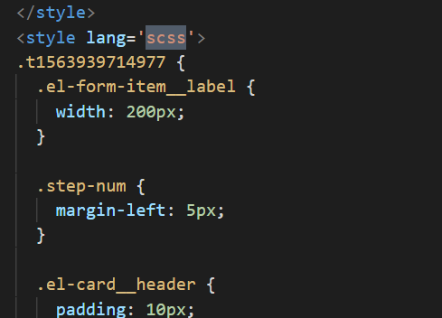
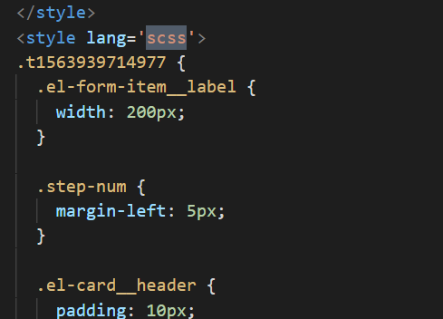

目前的解决方式是在:组件根部加入特定class,使用scss将这些开放样式包起来,虽然可以完全解决问题,但是有一种治标不治本的感觉,解决粗暴不优雅
|  |  |
我认为今后需要建立一些基础模板方便新组建创建时拷贝,尽量使用element的排版方式,写样式时不追求一时之快,能解决以上问题
在cms实际运行过程中,由于有些运用与动态组件的样式必须写在style(scoped)标签外面才可以生效, 当组件多了,前面运行的组件中的样式会污染公共区域,造成样式污染,影响后面组件的展示
在解决这种问题时发现的原因主要有4点:
1.加入新组件时直接复制老组件进行修改,代码中存在很多无用的样式
2.有些在组件开放style里的样式,完全可以抽出来编成公用组件
3.书写的时候不认真,一些应该写在style(scope)里的样式写在了样式开放style里
4.滥用style,有时完全可以使用element排版的东西,简单的使用样式限定,我感觉不必要
目前的解决方式是在:组件根部加入特定class,使用scss将这些开放样式包起来,虽然可以完全解决问题,但是有一种治标不治本的感觉,解决粗暴不优雅
|  | |
我认为今后需要建立一些基础模板方便新组建创建时拷贝,尽量使用element的排版方式,写样式时不追求一时之快,能解决以上问题